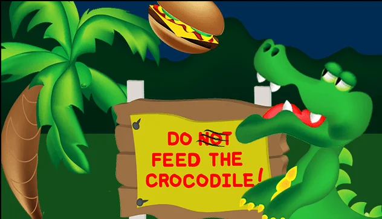
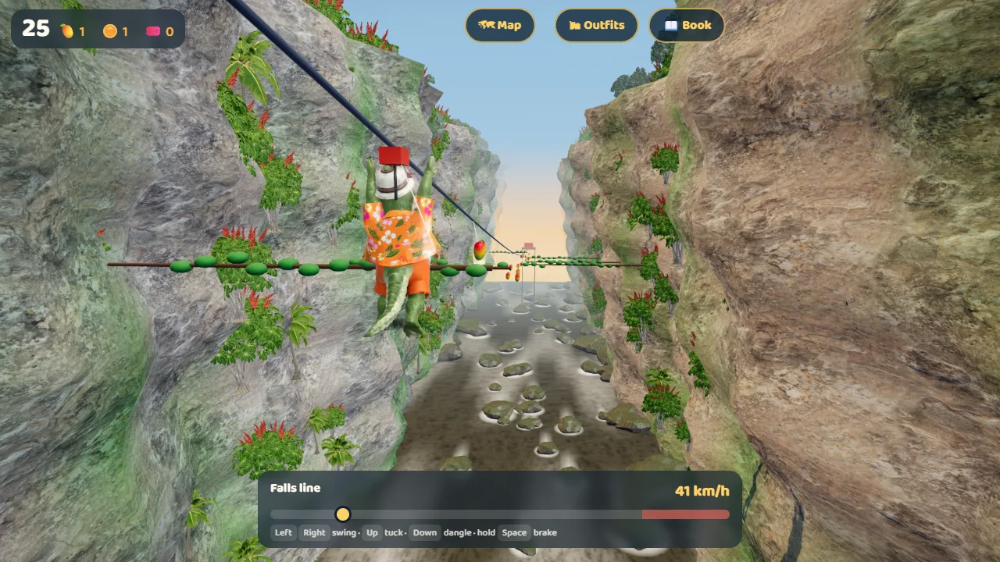

For the Love of Cairns
Chomp 3D: Wally's Cairns Adventure is a love letter to Cairns and Tropical North Queensland: its reef, its rainforest, its towns and its people, seen through the eyes of one very excitable, very hungry crocodile.
Then and now
Wally's story did not start this year. Ken Bingham made the first Chomp in 2014: a two-dimensional game with a crocodile, a palm tree, a flying burger and a sign that read "Do not feed the crocodile!" The joke is still here. There is a sign in Wally's croc park that says "Please DON'T feed the croc", and the visitors feed him anyway.


Wally
Wally was born at a crocodile sanctuary near Cairns, and people have been around him all his life. Visitors feed him even though the sign says not to, and he has learned the rule the whole game is built on: get just close enough and they throw you food; get too close and they run away. He loves food and he wants to get to know people, so he sets off to see the region. Along the way, the brave ones stop running and start trading.
Wally is a cartoon character, inspired by the spirit of Australia's great wildlife lovers. He is not a portrait of any real person.
The places in the game
Every area is a real place, drawn with love and some cartoon licence. Positions on the trip map follow the real map of the region.
The croc park
Wally's home, a crocodile sanctuary on the northern beaches. It is made up, inspired by the region's real wildlife parks rather than copied from any one of them.
The Esplanade
The Cairns waterfront: the boardwalk, the picnic spots, the fig trees and the free swimming Lagoon by the sea, beside tidal mudflats where migratory shorebirds feed, some flying in from as far as Siberia.
Green Island and the Great Barrier Reef
A coral cay off Cairns, and the reef around it. The Great Barrier Reef is the largest coral reef system in the world and is World Heritage listed. In the game Wally dives a coral maze and explores a cave; in real life, reef trips leave from Cairns every day.
Kuranda and the Skyrail
A village in the rainforest on the range above Cairns, known for its markets, art and crafts. Visitors ride up over the rainforest canopy by the Skyrail, or by the historic Kuranda Scenic Railway, finished in 1891.
Barron Falls and the Barron Gorge
Just below Kuranda the Barron River drops into a deep gorge. In the dry season the falls are a few thin ribbons of water down pale granite; in the wet season they roar, wide and brown with sediment, with mist rising out of the gorge. The game shows them in the wet.
Coming later: Mossman Gorge and the Daintree
A crystal-clear river running over granite boulders in the rainforest at Mossman Gorge, in the Daintree National Park and the traditional country of the Eastern Kuku Yalanji people; and further north the Daintree, one of the oldest tropical rainforests on Earth, where the rainforest meets the reef. The region's rainforests are World Heritage listed as the Wet Tropics.
The wildlife
Pelicans, flying foxes, cane toads, saltwater crocodiles, box jellyfish, Ulysses butterflies and cassowaries all live in the region. Cane toads are not native: they were brought to Queensland in the 1930s and are now a serious pest.
Real crocs are wild: be Crocwise
Wally is a cartoon. Real saltwater crocodiles are wild animals and dangerous. Never feed them, never approach them, keep well back from the water's edge in croc country, and obey the warning signs. Queensland's advice is to be Crocwise.
Box jellyfish and other marine stingers are dangerous too. In stinger season, swim at patrolled beaches inside the stinger nets, wear a stinger suit, and follow the lifeguards' advice.
How it was made: human-centric AI assist
"AI is support, not the driver. AI is not the decision-maker. The human is the conductor, the director and the conceiver of the ideas."Ken Bingham
This game is Ken's ideas and Ken's work. AI wrote the code, under his direction. It could not have been made by AI alone, or look the way it does, without detailed prompts, instructions and follow-ups at every step, from the first idea to the last fix.
This is AI-assisted programming done right: it does not replace people. It took human imagination, and human knowledge of the subject, both material (the place, its people, its wildlife) and technical (3D modelling, how games are built). Without Ken's knowledge of both, AI could not have dreamed this up and handed it over.
Who did what
| Ken Bingham | The AI tools |
|---|---|
| Conceived it. Wally and the "don't feed the croc" idea go back to Ken's own game, Chomp, in 2014. | Claude (Anthropic), in VS Code, wrote and tested the code to Ken's instructions. |
| Designed it. The story, the places and their order, every rule, the quests, the chests and keys, the reward, the difficulty. | Offered options when asked and raised technical problems. Ken decided what, if anything, to keep. |
| Directed the look. Every 3D model came from Ken's instructions to Meshy, drawing on his knowledge of 3D modelling: pose, proportion, detail, and how a model has to be built to move in a game. He set the camera angles and the art direction. | Meshy generated the models from those instructions. Claude prepared them for the game: reduced, rigged and animated. |
| Knows the place. Ken has known the Cairns region since 1984. He read up on it as it is today, with AI help to bring his picture up to date, and chose what to show. | Copilot helped Ken research technologies, technical and industry standards, common gaming practices, and the region today. |
| Judged everything. Whether it is fun, true to the place and respectful; what stays and what goes. | Checked its own work by testing and measuring, and reported what it found, mistakes included. |
From the conversation
The game was made in a running conversation: Ken instructing and deciding, the AI building, asking and proposing. A few moments from it, in Ken's words:
- Ken, at the start: "This is not vibe programming, where I say make me this. This is me being involved every step of the way."
- Ken imagined Wally escaping through the cane fields, chased by croc catchers who would send him home. Talking it through, he changed his mind: "Let's drop the croc catchers altogether. I don't want a circular game." Then: "Let's not do the cane fields. I just don't think there is a real story there."
- Ken on going back to earlier places: "You can go back to any earlier thing, but only to collect what you need, not be sent back as a punishment." And: "When you go back you must have a challenge, not just go back to easily collect. The items are a reward for fulfilling the challenge."
- The AI asked what opens the reef. Ken: "The giant clam gives you a pearl key that opens the chest at the end of the maze."
- The AI built the waterfall on the side wall of the gorge. Ken sent reference photos of the falls in the wet and the dry, and: "Our angle will be along the gorge looking down it, not a side view."
- Ken on helping new players: "Make sure the game is intuitive. If instructions need to be presented the first time something is encountered, that is fine, with the ability to toggle that on and off." That became the game's first-time tips.
- The AI suggested plainer clothes for one character, to be safe. Ken: "I do not want to be so culturally sensitive that people are depicted so generically that their culture is hidden." On the Torres Strait auntie: "She depicts people I know. But not exactly: it's not them, just a representation."
- On the rules of the game, Ken: "To keep and retain things, points, items, you must complete the area." And on why: "Crocs like to hide things, so anything in another area he had hidden already."
What the AI got wrong, caught by a person
- It built the Kuranda rainforest from the wrong model, a single banana plant with a similar file name, until Ken said: wrong trees.
- It reported the new waterfall was on screen when the title screen was covering it. Ken kept saying he was still seeing the old version, and he was right.
- An AI tool gave one character a dress printed with an imitation of Aboriginal art. Deciding how culture should be shown is a job for people, and for the communities themselves.
- AI-made models came out with millions of triangles, garbled lettering on signs, and two clam shells fused into one lump. Each had to be checked and fixed before it could go in the game.
- It drew the river's foam as hard white squares, then put the bright end of each streak on the wrong side, before getting it right. Nothing it made was taken on trust: each piece was looked at before it went in.
Human direction and AI speed together are why it came together so fast: the 3D game was put together over one weekend in October 2026. The ideas are Ken's, and so is the work: the AI tools built, modelled, processed and tested what he directed, and he decided.
Where everything comes from
| What | Source |
|---|---|
| Title art, 3D characters, props, trees and the falls | Made by Ken Bingham with AI generation tools (Meshy, a paid plan, and others), from his own designs, descriptions and pictures; 3D models reduced, rigged and animated for the game in Blender |
| The 2014 Chomp artwork | Ken Bingham |
| Sky lighting and photograph | Poly Haven, "Kloofendal 48d Partly Cloudy (Pure Sky)", CC0 |
| Sand, timber planks, rock, paving, palm bark surfaces | Poly Haven, CC0 |
| Grass surface | ambientCG, "Grass006", CC0 |
| Water ripples | three.js examples, MIT licence |
| The 3D engine | three.js, MIT licence |
| Lettering | Baloo 2, from Google Fonts, SIL Open Font Licence |
| Sound effects and music | Made in the game's own code. The music is a placeholder, to be replaced by recordings from Aboriginal and Torres Strait Islander musicians |
| Code | Directed by Ken Bingham, written with an AI coding assistant (Claude, by Anthropic) in VS Code |
| Research | Copilot: technologies, technical and industry standards, common gaming tropes and practices |
Privacy, and free to play
- Free for everyone. This game is a portfolio piece, not a commercial product. Anyone is welcome to play it, free. There are no ads and nothing to buy with real money. If it takes off, that could change one day, and any change would be said plainly here first. For now, it is here to show what one person and AI can make together.
- Your information is never sold. Nothing about you is sold, rented or shared with anyone.
- Your game is saved on your own device. Progress, outfits, hats and settings are kept in your browser on this device, not on a server. Clearing your browser's site data clears them.
- The leaderboard keeps only what you give it: the player name you choose, your score and your stars. Use a nickname, not your real name. No account, email or sign-in is needed.
- No tracking. There are no analytics, advertising or tracking cookies. The site is hosted on Cloudflare, which handles ordinary web traffic to deliver the pages.
Disclaimers
- Never, ever, ever feed a crocodile. Wally is a cartoon and this game is make-believe. Real crocodiles are wild and dangerous, feeding them teaches them to come to people, and in Queensland it is against the law. Stay well back from the water's edge in croc country and be Crocwise.
- This is an independent game. It is not affiliated with, sponsored or endorsed by Cairns Regional Council, any tourism body, any wildlife park, reef operator, cableway, railway, market or business, or any brand.
- Real place names are used to describe real places. Business and product names belong to their owners.
- In showing the visitors and the people who live in the region, every effort was made to honour the cultures of Aboriginal and Torres Strait Islander peoples, and to be respectful and representative of the many peoples who live in and visit the area: Torres Strait Islanders, Aboriginal Australians, Pacific Islanders, Asian Australians and visitors, Americans and white Australians, along with common dress, customs and traditional Aussie culture. No offence is intended. To show a people, some common characteristics have to be shown, but never through negative stereotypes, caricatures, or wrongful or ignorant depictions. Every person in the game is a stylised cartoon character, a representation of the kinds of people you meet in Cairns, not a likeness of any real person.
- The human characters are not real people. Every human character was created by artificial intelligence from scratch, following the creator's written instructions for how each one looks and dresses. No photograph or image of any real person was used to create them. They were given a slightly cartoony look on purpose: not to be comical, but so that none of them resembles anyone real, while still portraying the many people who live in and visit Cairns and the region. Any likeness to any person, living or dead, is purely coincidental.
- The scenery is of real places. Photographs of real places were looked at only as reference, to see what each place looks like. None of them is used in the game itself: the scenery was built as new, cartoonised 3D models, so that what you see is a real place, not a copy of anyone's photograph or artistic work. A photograph is one view from one spot; a 3D model has no fixed viewpoint, so it reproduces no photographer's framing. Barron Falls, for instance, is photographed by nearly everyone from the same lookout, and the game's model is the falls themselves, seen from wherever the game's camera happens to be. The only photographic textures in the game (the sky, sand, rock, timber, paving, bark and grass) are free CC0 textures, listed under "Where everything comes from".
- No animal is killed or harmed in this game, Wally included. When Wally runs out of energy he simply collapses with exhaustion, which is why Kenny the Koala is there to revive him with Australia's favourite spread.
- The game is fiction. Places, distances, wildlife and events are simplified for play. Facts on this page are given in good faith; check official sources before you travel.
- Much of this game was made with the help of artificial intelligence, under human direction, as described above.
Acknowledgement of Country
Chomp 3D is set in Far North Queensland. We acknowledge the Traditional Custodians, the stewards of the lands and waters it celebrates, who are part of this Country as the rivers, the streams and the rainforest are, including the Gimuy Walubara Yidinji and Yirrganydji peoples of Cairns, the Djabugay people of Kuranda and the Barron Gorge, and the Eastern Kuku Yalanji people of the Daintree and Mossman Gorge, and recognise their continuing connection to these lands, waters and cultures. We pay our respects to Elders past and present. We acknowledge too the Torres Strait Islander peoples, and all Aboriginal and Torres Strait Islander people who call Cairns, the Tablelands and Far North Queensland home, and everyone, from every background, who calls this region home. Aboriginal and Torres Strait Islander people are welcome to tell us how they would like to be shown in the game, and to change or add characters.
Copyright and licence
Chomp 3D: Wally's Cairns Adventure is copyright © 2014 and 2026 Ken Bingham. It is open to play, and open to read, but it is not open source. Anyone may play it, free. The code is public on GitHub so anyone can see how a person and AI built it together, under the PolyForm Strict License 1.0.0: you may read it, run it and learn from it for any noncommercial purpose, but not copy it into your own work, change it, or share copies of it. For anything more, ask through the form below.
That covers Ken Bingham's own work: the code, the story, the characters, the 3D models and the art. The parts made by others keep their own licences (three.js, MIT; the Draco decoder, Apache 2.0; the Poly Haven and ambientCG surfaces, CC0; the Baloo 2 lettering, SIL Open Font Licence), as listed under "Where everything comes from".
Fair use
Real places, landmarks, place names and public facts about Cairns and Far North Queensland appear in this game to describe them, to celebrate them and to teach a little about them, in a non-commercial work of fiction, commentary and parody. The creator believes this is fair use (in the United States) and fair dealing (in Australia). No photograph, artwork or recording by anyone else is copied into the game: the scenery was built new, as described above. If you believe something here is not fair use, or uses your work without permission, please say so through the form below, and it will be looked at promptly and removed if it should be.
Feedback and takedown notices
Feedback, ideas and corrections are welcome, especially from people who live in the places shown, and from Aboriginal and Torres Strait Islander people about how they are shown. Copyright (DMCA) and takedown notices go through the same form.
Chomp 3D: Wally's Cairns Adventure. Created by Ken Bingham, 2014 and 2026.